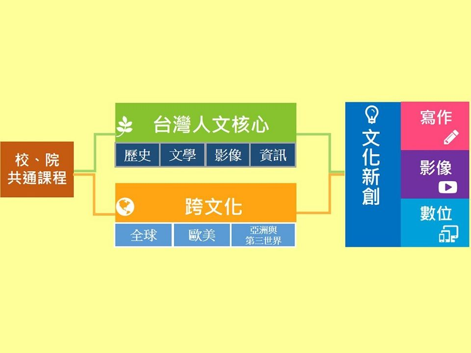

台灣人文創新學士學位學程
- 「台灣人文核心」課群：
本課群透過跨領域、跨學科的師資，建構學生對於台灣的文學、影像、歷史等人文領域相關資源與知識、重要議題、文化生產、學科方法學之理解與應用。
- 「跨文化」課群：
本課群從台灣視角出發，延展至全球、亞洲、歐美、第三世界的文學、思想、社會與文化，培養學生理解異文化、建立跨文化思考與比較的能力。
- 「文化新創」課群：
本課群針對影像製作、寫作與數位三種表現的媒介，提供1門專題製作必修課程與兼具理論基礎與實作應用的選修課程。
結合本院鹿鳴文化資產中心之資源，培養學生在進行文化生產時所需的知識與技能。
修課建議

課群分類示意圖。
學程位置